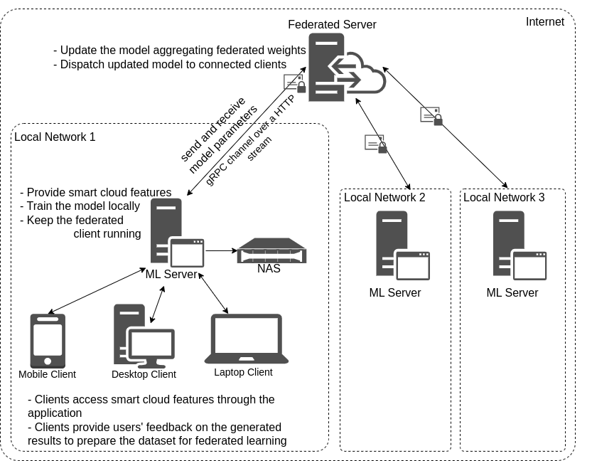

Welcome to PicsSmart Documentation
PicsSmart is a Smart Media Cloud Application that provides features such as:
- Automatic Image Captioning
- Face Detection and Clustering
- Smart image search using text prompts
- Similar photos suggestion
- Smart image search using image prompt
This application preserves privacy of the user data by using a Federated Learning architecture.
Application Architecture
The application is divided into three main components:
The high level architecture of the application is illustrated in the below diagram.
